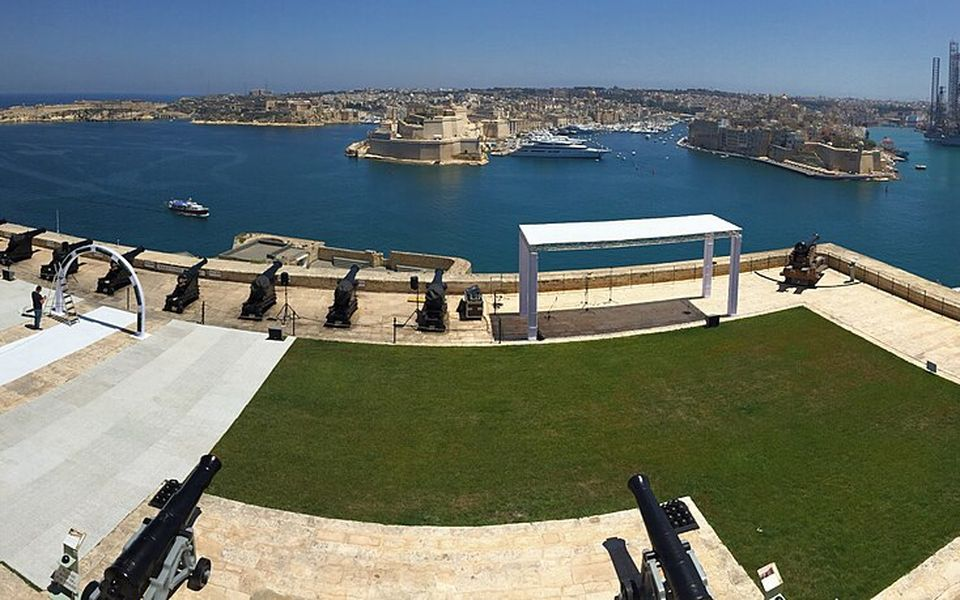

Malta llum
L-għażliet ta' Blue
Gwidi, klassifiki u analiżi minn CompareMalta.ai biex tgħix, tiekol u tibbankja aħjar f'Malta.
 Bankar · 22 Novembru 2026Il-ħames banek il-kbar ta' Malta fuq il-mowbajl: kemm verament jiskorjaw l-apps tagħhomSkorjajna l-apps ta' BOV, HSBC, APS, BNF u Lombard fuq il-ftuħ tal-kont, l-użu ta' kuljum, il-funzjonijiet u l-wallets. L-aħjar jilħaq 3.8 minn 5; il-biċċa l-kbira huma fuq 2 jew inqas.
Bankar · 22 Novembru 2026Il-ħames banek il-kbar ta' Malta fuq il-mowbajl: kemm verament jiskorjaw l-apps tagħhomSkorjajna l-apps ta' BOV, HSBC, APS, BNF u Lombard fuq il-ftuħ tal-kont, l-użu ta' kuljum, il-funzjonijiet u l-wallets. L-aħjar jilħaq 3.8 minn 5; il-biċċa l-kbira huma fuq 2 jew inqas. Ikel u Xorb · 22 Novembru 2026Ħames fran Maltin li jistħoqqilhom tqum kmieni għalihomFran tal-ħatab, stejjer mill-gwerra u l-ftira Għawdxija: ħames fran tradizzjonali f'Malta u Għawdex li għadhom jaħmu bil-mod il-qadim.
Ikel u Xorb · 22 Novembru 2026Ħames fran Maltin li jistħoqqilhom tqum kmieni għalihomFran tal-ħatab, stejjer mill-gwerra u l-ftira Għawdxija: ħames fran tradizzjonali f'Malta u Għawdex li għadhom jaħmu bil-mod il-qadim.
Ikel u Xorb · 22 Novembru 2026Kull stilla MICHELIN u Bib Gourmand f'Malta, f'ordniIl-Gwida MICHELIN 2026 ta' Malta żammet is-seba' restoranti bl-istilel kollha u żiedet il-ħames Bib Gourmand. Hawn huma t-tnax kollha, minn ION Harbour b'żewġ stilel sal-aħjar valur fil-gżejjer.